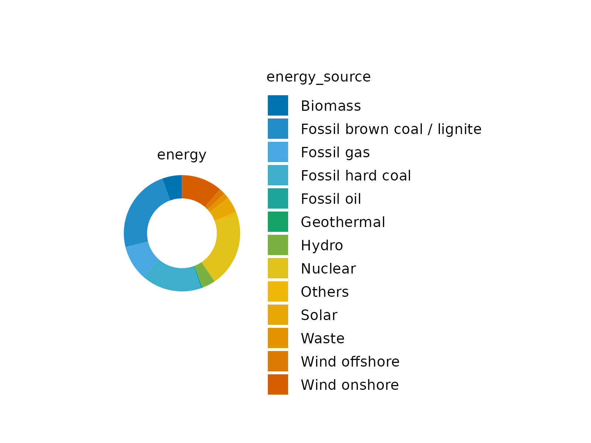
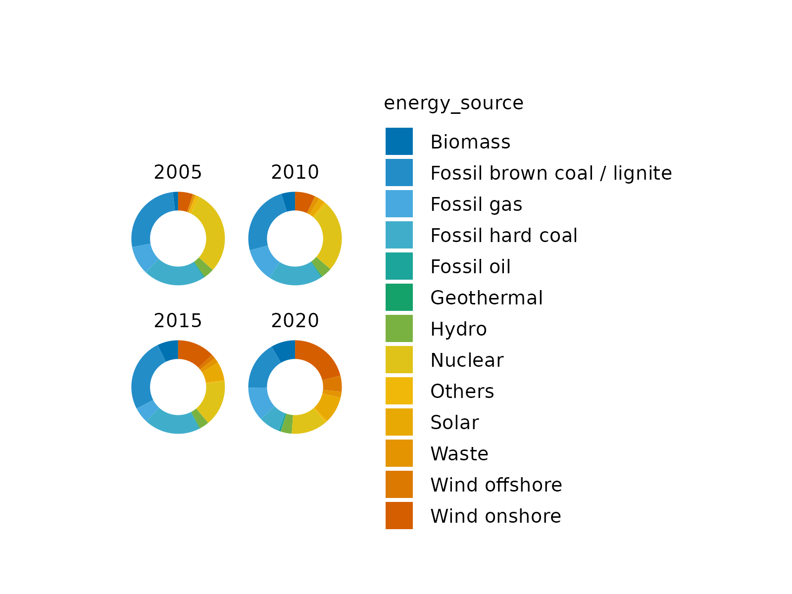
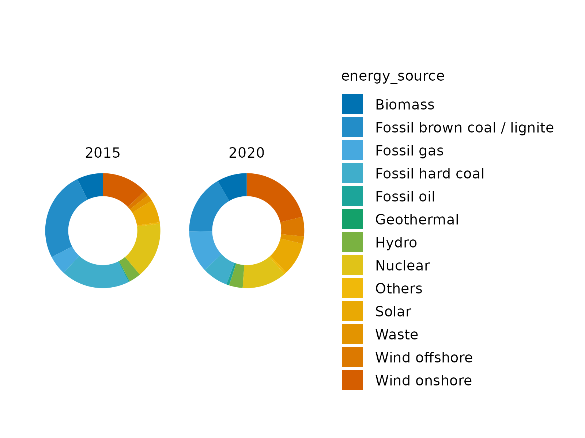
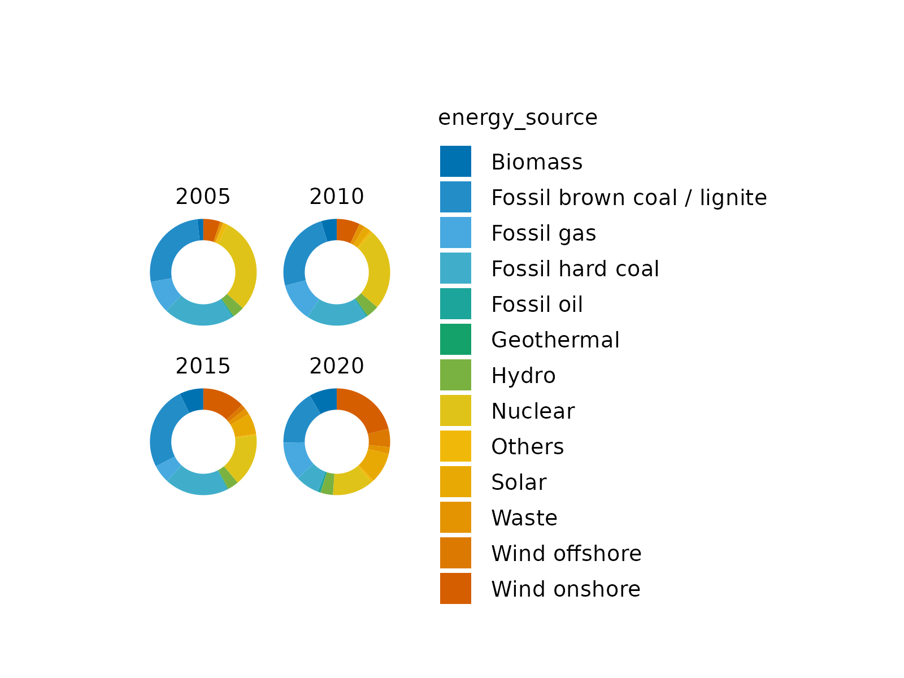
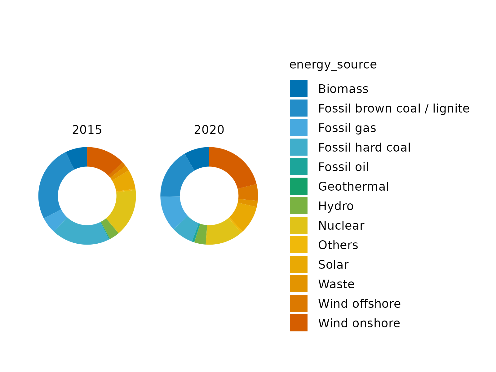

Split plot into multiple subplots
Usage
split_plot(
plot,
by,
ncol = NULL,
nrow = NULL,
byrow = NULL,
widths = 30,
heights = 25,
guides = "collect",
tag_level = NULL,
design = NULL,
unit = "mm"
)Arguments
- plot
A
tidyplotgenerated with the functiontidyplot().- by
Variable that should be used for splitting.
- ncol, nrow
The number of columns and rows per page.
- byrow
Analogous to
byrowin matrix(). IfFALSEthe plots will be filled in in column-major order- widths, heights
The relative widths and heights of each column and row in the grid. Will get repeated to match the dimensions of the grid. The special value of
NA/-1nullwill behave as1nullunless a fixed aspect plot is inserted in which case it will allow the dimension to expand or contract to match the aspect ratio of the content- guides
A string specifying how guides should be treated in the layout.
'collect'will collect guides below to the given nesting level, removing duplicates.'keep'will stop collection at this level and let guides be placed alongside their plot.autowill allow guides to be collected if a upper level tries, but place them alongside the plot if not. If you modify default guide "position" with theme(legend.position=...) while also collecting guides you must apply that change to the overall patchwork (see example).- tag_level
A string (
'keep'or'new') to indicate how auto-tagging should behave. Seeplot_annotation().- design
Specification of the location of areas in the layout. Can either be specified as a text string or by concatenating calls to
area()together. See the examples for further information on use.- unit
Unit of length. Defaults to
"mm".
Examples
# Before splitting
energy %>%
dplyr::filter(year %in% c(2005, 2010, 2015, 2020)) %>%
tidyplot(y = power, color = energy_source) %>%
add_donut()

# Split by year
energy %>%
dplyr::filter(year %in% c(2005, 2010, 2015, 2020)) %>%
tidyplot(y = power, color = energy_source) %>%
add_donut() %>%
split_plot(by = year)
#> ✔ split_plot: split into 4 plots across 1 page
 # Change dimensions of subplots
energy %>%
dplyr::filter(year %in% c(2005, 2010, 2015, 2020)) %>%
tidyplot(y = power, color = energy_source) %>%
add_donut() %>%
split_plot(by = year, widths = 15, heights = 15)
#> ✔ split_plot: split into 4 plots across 1 page

# Spread plots across multiple pages
energy %>%
dplyr::filter(year %in% c(2005, 2010, 2015, 2020)) %>%
tidyplot(y = power, color = energy_source) %>%
add_donut() %>%
split_plot(by = year, ncol = 2, nrow = 1)
#> ✔ split_plot: split into 4 plots across 2 pages
#> [[1]]
#>
#> [[2]]

#>
# Change dimensions of subplots
energy %>%
dplyr::filter(year %in% c(2005, 2010, 2015, 2020)) %>%
tidyplot(y = power, color = energy_source) %>%
add_donut() %>%
split_plot(by = year, widths = 15, heights = 15)
#> ✔ split_plot: split into 4 plots across 1 page

# Spread plots across multiple pages
energy %>%
dplyr::filter(year %in% c(2005, 2010, 2015, 2020)) %>%
tidyplot(y = power, color = energy_source) %>%
add_donut() %>%
split_plot(by = year, ncol = 2, nrow = 1)
#> ✔ split_plot: split into 4 plots across 2 pages
#> [[1]]
#>
#> [[2]]

#>